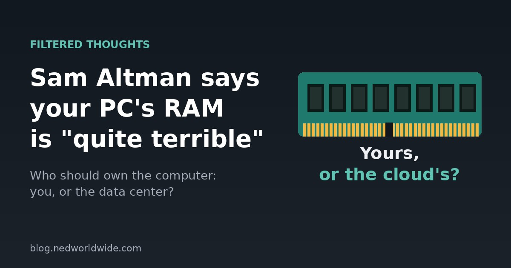

Sam Altman's PC RAM Comments: Why I Still Build Tools That Run on Your Computer

OpenAI CEO Sam Altman said something this week that has a lot of people searching: he thinks it's "quite terrible" that so much computer memory sits inside our home PCs instead of in AI data centers. As somebody who builds free web tools that run right on your own device, I had some thoughts.
The short version
- Altman says RAM in home PCs sits idle most of the time, so the world's limited supply would be better used in the cloud.
- RAM is scarce and expensive right now, largely because AI data centers are buying so much of it.
- I think there's a strong case for keeping computing on your own device, and that's how I build my tools.
What Sam Altman said about PC RAM
On the Cheeky Pint podcast, Altman argued that having memory (DRAM) spread across everyone's computers is a poor use of a scarce resource. His point: the RAM in your PC is only "being used 5% of the time," while servers in a data center can run around the clock.
In his words, with supplies this tight, "you want maximum utilization in the cloud." He was mainly talking about running AI models locally on your own computer, versus running them on OpenAI's servers.
Why people are upset
The timing is rough. RAM prices have shot up this year. Back in February, the research firm TrendForce forecast DRAM contract prices rising 90 to 95 percent in a single quarter, with AI demand largely to blame. PC makers have raised prices, and gamers and builders are paying more for every upgrade.
So hearing the head of one of the biggest AI companies suggest that your share of the memory supply would be better off in his data centers didn't land well. Tech sites pointed out that OpenAI's business is selling AI that runs in the cloud, so of course its CEO prefers that model.
To be fair, he has a point
Altman isn't wrong that most home computers sit idle a lot of the day. A data center can share one pool of hardware across thousands of people, and that's genuinely more efficient for some jobs. Training and running the biggest AI models takes hardware no regular person could afford at home.
Cloud tools are also convenient. You don't need a powerful computer, and everything just works from any device.
Why I still build tools that run on your device
Here's where I land, and it comes from building things myself. I build all my web tools and games with the help of AI, so I'm not anti-AI or anti-cloud. But when I can, I make the work happen right in your browser, on your own computer or phone.
- RoutePilot, my free route planner, does its route planning in your browser and doesn't save your route on a server.
- KitReel, my soccer highlight tool, keeps your game video on your device. It's never uploaded, which matters when the video is of your kids.
- My free browser games load and run on your device. No accounts, no waiting on a server.
Running on your device means:
- Privacy. Your addresses, videos and files don't have to leave your hands.
- Ownership. You bought the computer. It should do work for you, not just act as a window into someone else's.
- Cost. Tools that use your own hardware are cheaper to run, which is how I can keep mine free with no subscription.
- No lock-in. If a company changes its prices or shuts down a service, the stuff on your own device keeps working.
So, should your PC have RAM?
Yes. I think the future is probably a mix: giant AI jobs in the cloud, and everyday tools running on the devices we already own. Your computer sitting idle part of the day isn't a waste. It's yours, ready when you need it.
What do you think? Would you rather rent your computing from a data center, or own it? Let me know on X at @ned4short.
Try a tool that runs on your own device. Plan a multi-stop route with RoutePilot. It's free, there's no account, and your route isn't saved on a server.